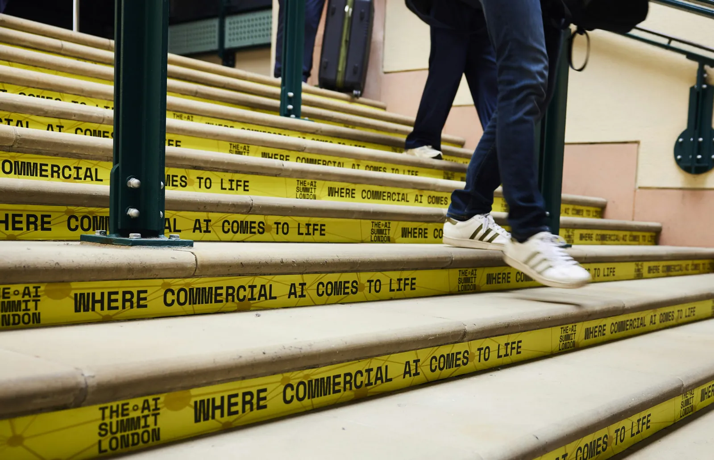
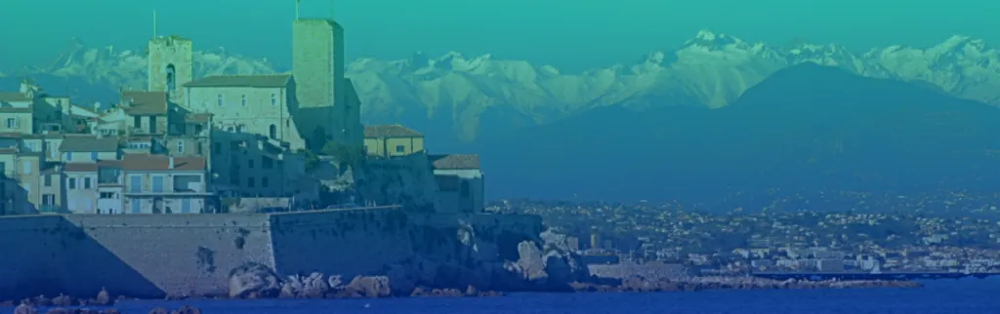
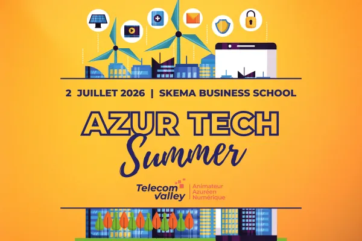
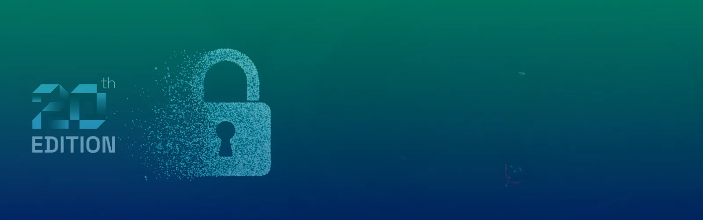

12–13
The Palais de l'Europe books medical congresses[1], not IT. But Menton is the eastern terminus of a fast coastal rail line — and on that line, 2026 has eleven tech events worth catching. A chronogram of the dates, the stations, and what fits which trip.
Direct TER services run Menton ⟷ Monaco ⟷ Nice ⟷ Cannes along the coast. Sophia Antipolis hangs off the line — train to Antibes or Nice, then bus[21]. Travel times below are minutes from Menton platform.
Striped cells are dead months. The corridor lights up in five clusters: Feb, Apr, Jun, Jul, Oct — outside those, the conference-bolted version of a Menton weekend doesn't exist.

Standards-track · AI · Data Management
At ETSI HQ in Sophia Antipolis[15]. Same week as WAICF — pick by audience: standards/telco/infra here, generalist there.

User Conference · Advanced Automated Testing
12th edition of the automated-testing conference at ETSI HQ[16]. Tightly technical, narrow-bore.
Grimaldi Forum · CIO / CISO / CTO
200+ IT decision-makers, pre-arranged one-to-ones on digital transition and cybersecurity[6].
One Monte-Carlo · Web3 + AI + digital assets
2,000+ attendees. Confirmed speakers: BNP Paribas, Franklin Templeton, EU Commission & Parliament[8].

SKEMA · Telecom Valley regional day
One-day regional digital-industry gathering hosted by Telecom Valley[13]. Pairs naturally with Riviera DEV four days later — same campus.
SKEMA · Java/JVM heritage, broadened
Three days of developer talks, workshops, hands-on sessions in Sophia Antipolis[12]. The conference most worth a Sophia mini-trip with a hotel in Antibes.

20th edition · agentic AI · PQC · Zero Trust
Headline themes for 2026: agentic AI, post-quantum cryptography, Zero Trust[14]. Heavy on standards-track security work.
Palais des Festivals · Science/tech-park policy
Innovation-park leadership + technical tours of Sophia Antipolis itself[17]. Policy crowd, not engineering.
Menton · medical & scientific congresses
Menton's own 3,000 m² convention venue books JAS (12–14 Oct, hospital architecture)[2], PILM, ICQC — no IT or developer-focused events[1]. Sciences Po Menton runs Mediterranean-politics conferences[4].
Five windows where the corridor has something. Four months where it doesn't. The recommendation column tells you which event to lead the trip on.
Last trains east of Nice tighten around 22:30–23:30 — that's the cut-off for evening receptions, Riviera DEV after-parties, WAIB yacht-club dinners.
Two outs: taxi back (~€80 from Monaco[18], €150+ from Cannes[20]), or sleep one night at the venue city. WAIB's Yacht Club de Monaco evenings are invite-only family-office dinners[8]; if you're not on the list, the 11-min train home is the right call.
Year-round pitches, meetups and community evenings across Nice and Sophia — best single page to check before any visit[23].
Annual open-source community conference with ~1,000 attendees at SophiaTech, plus year-round Tech Events workshops[24].
Evening sessions on TDD, DDD, clean code — small and technical, in Nice and Sophia[22].
Monaco's standalone AI conferences are announced 2–3 months ahead; the regional ecosystem page is the early-warning feed[25].
Weekend playbook: Old Town loop, jardins remarquables, Cocteau status, beaches, lemon trail and easy half-day trips.
One Michelin 3★ in town (Mirazur). No 2★. The nearest sit a ~15-min drive away.